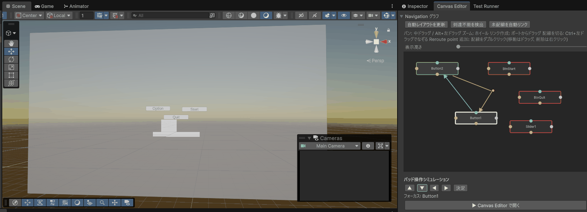
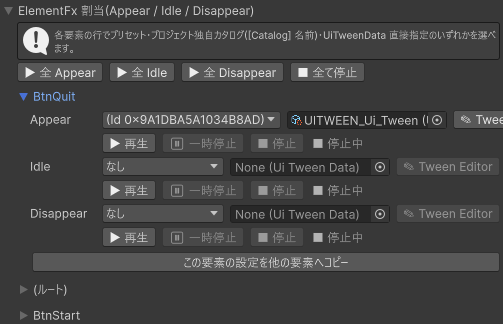
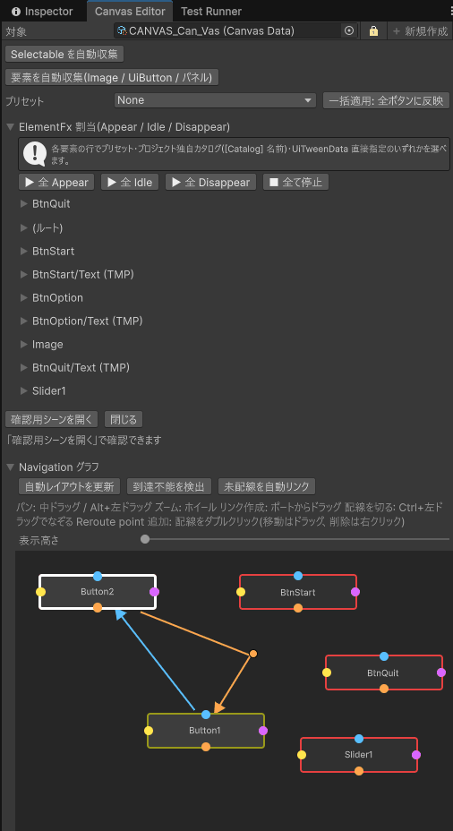

最終更新日: 2026-10-04
Canvas Editor は、Canvas(UI 画面)データを組み立てるための専用ウィンドウです。パッドのフォーカス移動(ナビゲーション)を矢印付きの図で編集し、要素ごとの演出(ElementFx)をまとめて割り当て、実際にシーン上で開いて確かめられます。
Tools > D-Drive > Editors > Canvas。Project で Canvas データを選ぶと自動で入ります(「🔒」を ON にすると追従しません)Tools > D-Drive > Editors > UI Tween · Preset Gallery(プリセットギャラリー)Prefab と Layer=Menu を設定する(作り方)
上から順に並んでいます。ウィンドウの中に UI の絵は出ません。見た目の確認は「確認用シーンを開く」で Game / Scene ビューを見ます。
| 要素 | 説明 |
|---|---|
| ツールバー(対象 / 🔒 / Prefab を開く(要素の移動)) | 編集する Canvas データ。「🔒」= 選択に追従しない。「Prefab を開く(要素の移動)」を押すと確認用プレビューを片付けてから、この Canvas の Prefab をプレハブモード(編集用の専用画面)で開きます。ここで要素を選んで Unity 標準の移動 / 回転 / リサイズツールで動かせます(Ctrl+Z で戻せます)。確認用シーンのプレビューを動かしても Prefab には反映されないため、実際に配置を変えたいときは必ずこちらを使ってください |
| Selectable を自動収集 | Prefab 内の uGUI の Selectable(Button / Slider / Toggle など)を探して Navigation に行を足します(既存の行は残ります。4 方向は空 = Unity 自動のまま)。D-Drive の UiButton / UiSlider は拾いません。UiButton はグラフにはノードとして出るので、グラフでリンクを張るか、Inspector の Navigation に手で行を足してください。Prefab 未設定なら「Prefab を設定してください」 |
| 要素を自動収集(Image / UiButton / パネル)/ プリセット / 一括適用: 全ボタンに反映 | 「要素を自動収集」は Prefab 内の画像・UiButton・パネルから ElementFx の行を作ります(既存の行は保持)。「プリセット」で選んだ演出を「一括適用: 全ボタンに反映」で全 UiButton の Appear にまとめて入れます(「全ボタンの AppearPreset に … を設定しました」) |
| ElementFx 割当(Appear / Idle / Disappear) | 要素ごとに 1 箱(折りたたみ、初期状態は畳んだまま)で演出を割り当てます。上部の「▶ 全 Appear」「▶ 全 Idle」「▶ 全 Disappear」「■ 全て停止」で、登録済みの全要素のうち割り当てがあるものだけをまとめて再生・停止できます(停止すると再生前の状態に戻ります)。その下の「▶ 再生時にその要素を選択」にチェックを入れておくと(初期状態はチェックあり)、各行の「▶ 再生」を押したときにその要素が自動で選択され、Inspector で確認できます。まとめ再生では選択は変わりません。読み方は下の「ElementFx 割当セクションの行の読み方」を参照。行が無いときは「ElementFx がありません(上の「要素を自動収集」で追加してください)」 |
| 確認用シーンを開く / 閉じる | EventSystem だけを置いた専用の空シーン(CanvasPreviewScene)に切り替え、そのまま画面を開きます(自分の Canvas 等と重ならずに確認できます)。すでに確認用シーンにいるときにもう一度押すと、シーンは開き直さず画面の表示だけやり直します(設定を変えた後の見直しに)。Hierarchy に [D-Drive] Canvas Preview と [D-Drive] UI Root が出ますがシーンには保存されず、ウィンドウを閉じる・別のシーンに移ると消えます。Appear / Idle の演出はエディタ上で実際に動きます。「閉じる」は演出を待たず即座に消します(Disappear の動きそのものを見たいときは、ElementFx 割当の各行にある「▶ 再生」で個別に確認してください)。ステータス: 「CanvasData を選択してください」→「「確認用シーンを開く」で確認できます」→「プレビュー表示中」/「表示に失敗しました」 |
| Navigation グラフ | 下の「Navigation グラフの操作」を参照 |
| パッド操作シミュレーション | 「▲」「▼」「◀」「▶」「決定」でパッド操作を再現します。「確認用シーンを開く」で開いている間だけ押せます。詳細は下の「パッド操作シミュレーション」を参照 |
| Inspector 埋め込み | Canvas データの全項目(Layer / Transition / Navigation / Buttons / Sliders / ElementEffects)を標準の Inspector として編集。ボタン・スライダーの配線はここの配列に行を足します(専用画面はありません)。Ctrl+Z 対応 |
| Validation | 問題ごとに色付きの箱(赤 = Error、黄 = Warning、青 = Info)。文言と対処は Canvas データのよくある警告。自動で直せる項目には右に「修正」ボタンが出ますが、現在の Canvas データの検査には無く、Prefab 内の UiSlider の検査結果にだけ出ることがあります。問題なしなら「Validation に問題はありません。」 |
| プリセットギャラリーとの行き来 | ギャラリー(Tools > D-Drive > Editors > UI Tween · Preset Gallery)で「適用先」に同じ Canvas データを選び、カードの「この要素に適用」を押すと、Canvas Editor の ElementFx の行に反映されます。逆にギャラリーには Canvas Editor から飛ぶボタンはありません |

見出し「ElementFx 割当(Appear / Idle / Disappear)」の下に、要素ごとの折りたたみ箱が並びます(初期状態は畳んだまま。要素のパスをクリックすると展開)。箱の見出しが要素のパス(Prefab ルート自身は「(ルート)」)で、展開すると中に 3 行あります。
| 要素 | 説明 |
|---|---|
| 「選択」/「フォーカス」ボタン | 箱の一番上にあります。どの要素の箱かを確かめるためのボタンです。「選択」は今表示されている実際の要素(Prefab をプレハブモードで開いているときはその中の要素、「確認用シーンを開く」で表示中のときはその要素)を選択して Inspector に出します。どちらも開いていないときは Prefab の中のその要素を選択してハイライトします。「フォーカス」は同じ要素を選択したうえで、Scene ビューのカメラをその要素の枠へ寄せます(表示中の要素が無いときは選択だけで、Scene ビューは動きません) |
| 「選択して移動(Prefab を開く)」ボタン | 箱の一番上にあります。押すとこの要素の Prefab をプレハブモードで開き(まだ開いていなければ自動で開きます)、この要素そのものを選択して Scene ビューへ寄せます。あとは Unity 標準の移動 / 回転 / リサイズツールでそのまま動かせます(Ctrl+Z で戻せます) |
| Appear / Idle / Disappear のラベル | 出現 / 常時(ループ)/ 消滅の 3 区間。Idle は Appear が終わってから始まり、閉じ始めで止まります |
| ドロップダウン | 「なし」/ 組み込みプリセット名 / [Catalog] 名前(プロジェクト独自に登録した演出)。「なし」を選ぶとその区間の設定は両方消えます。プリセットを選ぶと右の直接指定は消えます |
| 直接指定の欄 | UI Tween データをドラッグして入れる欄。入れるとドロップダウン側のプリセットは消えます(どちらか一方だけが有効) |
| 「✎ Tween Editor」ボタン | 直接指定(UI Tween データ)があるときだけ押せます。押すとUI Tween Editorが開き、この行が担当している実際の要素が自動でプレビュー対象に選ばれた状態で Track を編集できます。「確認用シーンを開く」がまだのときは自動で開いてから割り当てます |
| 「▶ 再生」/「⏸ 一時停止」/「■ 停止」 | UI Tween Editor を開かずに、この区間をその場で確認します。プリセット指定・直接指定のどちらでも押せます。「確認用シーンを開く」がまだのときは自動で開きます。「▶ 再生」は今の設定で確認用シーンの実要素に再生し(その要素で動いている他の演出、たとえば自動で流れている Idle は先に止めるので、混ざらずにその区間だけ見られます)、「⏸ 一時停止」は再生中だけ押せてその場で止め(もう一度押すか「▶ 再開」で続きから)、「■ 停止」は止めて、再生前の状態(元の位置・大きさ・回転・透明度・色)に戻します。「▶ 再生」は押すたびに、動いている演出を止めて再生前の状態へ戻してから再生し直すので、連打しても位置がずれません(「■ 全て停止」も同様に戻します)。対象の Prefab をプレハブモードで開いているときは、そのプレハブの中の要素でそのまま再生できます(確認用シーンには切り替わりません)。再生が終わる・止める・プレハブモードを閉じる・プレハブを保存するときに元の値へ戻すので、プレハブに再生の途中の値は残りません。右のラベルに「● 再生中」/「⏸ 一時停止」/「■ 停止中」が出ます |
| この要素の設定を他の要素へコピー | この箱の 3 区間の設定を、同じ Canvas の他の要素へまとめて配ります(「設定を他の要素へコピーしました」) |
| 要素 | 説明 |
|---|---|
| ▲ ▼ ◀ ▶ | フォーカスをその方向へ移します。Navigation に明示リンクがあればそれに従い、無ければその方向で一番近いボタン・スライダーへ。グラフでは現在位置が白い太枠になります |
| 決定 | フォーカス中の UiButton を押します(配線した OpenCanvas などが実際に動きます)。UiButton が無ければ uGUI のボタンに決定を送ります |
| フォーカス: … | 現在フォーカスしている要素のパス。まだ動かしていないときは「フォーカス: (未確認)」 |
EscapeOnLimit が ON のとき)。

「Navigation グラフ」の折りたたみ(最初は開いています)。Prefab 内の全ボタン・スライダーが、画面上の位置とだいたい同じ配置でノード(四角)として出ます(位置情報が無いものは 4 列に並びます)。これは配線を編集するための図であり、UI の見た目のプレビューではありません。
| 操作 | 説明 |
|---|---|
| 自動レイアウトを更新 | Prefab を変えたあとなどにノードを並べ直します |
| 到達不能を検出 | どこからもフォーカスが来られない要素を赤枠にして一覧します(「到達不能な要素が n 件あります(赤枠のノード):」)。無ければ「到達不能な要素はありません。」 |
| 未配線を自動リンク | 名前と違い、リンクは張りません。4 方向とも空(Unity 自動のまま)の要素を一覧するだけです(「未配線(Automatic のまま)の要素が n 件あります。Unity の自動ナビゲーションのまま動作します:」)。機械的にリンクを書くとレイアウト変更に追従しなくなるため、あえて書き換えない設計です |
| 表示高さ | グラフの高さ(320〜900) |
| リンクを張る | ノードの四辺にある丸いポート(▲上 / ▼下 / ◀左 / ▶右)を左ドラッグして、別のノードの上で離す。ドラッグ中は白い仮の矢印が出ます |
| 矢印の色 / 向き | 水色 = Up / オレンジ = Down / 黄色 = Left / 紫 = Right。矢印はノードとノードの隙間に描かれ、先端の三角(矢頭)が行き先を指します。行き来(例: A の Down と B の Up)を両方つないでいるときは、2 本の線がノード同士のちょうど真ん中で重ならないよう少しずらして並びます |
| ノードの枠色 | 通常 = ほぼ黒(Navigation に行が無いノードは背景が少し暗い)/ 黄土色 = Navigation には書かれているが Prefab 内に実体が無い(パス不整合)/ 緑 = FirstSelected / 赤 = 到達不能 / 白い太枠 = パッド操作シミュレーションの現在フォーカス |
| パン / ズーム | マウス中ボタンドラッグ、または Alt + 左ドラッグで移動。ホイールで拡大縮小(0.25〜2.5 倍) |
| ダブルクリック | その要素を Hierarchy で強調表示(Ping) |
| 右クリックメニュー | 「FirstSelected にする」/「Up を削除」「Down を削除」「Left を削除」「Right を削除」(無い方向は押せません)/「リンクを全て削除」(Navigation の行自体は残る)/「要素を Hierarchy で Ping」 |
| Undo | グラフの編集はすべて Ctrl+Z / Ctrl+Y で戻せます(グラフも描き直されます) |
Hud の中に Option(設定パネル)を入れるように、ある Canvas の Prefab の中に別の Canvas の Prefab を入れ子で置くことができます。子の演出(ElementFx)やボタンの配線は子の Canvas データに 1 か所で持ち、親を開いたときもそのまま効きます。同じ子を別の親に入れても書き直す必要がありません。
| 項目 | 説明 |
|---|---|
| 子の設定が効くもの | 子の Canvas データの ElementFx / Buttons / Sliders。子の Prefab の中のパス(例: Panel/BtnX)のまま書けます |
| 親のものが使われるもの | Navigation / FirstSelected / レイヤーの既定(Skin・SE・演出)/ 開閉の演出 / Layer・SortOffset / ポーズ・モーダルの設定。子のこれらの設定は無視されます(パッドの移動先を子の中まで張りたいときは、親の Navigation に OptionRoot/Panel/BtnX のように書きます) |
| 親の設定が優先 | 親の Canvas データに、埋め込み配下の同じ要素(親から見たパス OptionRoot/Panel)の行があるときは、親の行が勝ち、子の同じ要素の設定は使われません。「この画面ではここだけ演出を変えたい」ときの上書きに使えます(一覧では「親での上書き」と表示され、子の欄の該当行には「親で上書き」と付きます)。優先される単位: ElementFx は要素ごと(1 行 = Appear / Idle / Disappear の組。親に OptionRoot/Panel の行があれば、子の Panel の演出は 3 つとも使われません)。ボタン・スライダーの配線は要素 + トリガーごと(親が OptionRoot/BtnX の Click だけ配線していれば、子の同じボタンの Click は使われませんが、LongPress など別のトリガーの配線は子の設定が使われます)。1 つの要素の設定は 1 回だけ適用されます |
| 入れ子の入れ子 | 子の Canvas データ自身が、自分の中の入れ子を埋め込みとして登録している形(Hud の中の Option の中の Volume)が基本です。優先は「Hud 自身 > Option > Volume」の順。親(Hud)に OptionRoot と OptionRoot/Inner のように重なる登録をすると Validation に Warning が出ます(設定の誤りです。実行時は、より内側の登録がその配下の要素を担当し、同じ要素は 1 回だけ適用されます。Hud 自身の行は、子の設定より常に優先されます)。「入れ子 Prefab から検出」は、他の登録の中にある入れ子の入れ子を提案しません(その子の Canvas Editor で登録します) |
| ボタンの「この Canvas を閉じる」(CloseSelf) | 埋め込み時は親の Canvas を閉じます(子は単独の画面ではないため)。「戻る」(CloseTop)・「別の画面を開く」(OpenCanvas)は変わりません |
| 子を単独で開く | 子の Prefab を単独の画面としても使えます(同じ子の Canvas データを、単独でも埋め込みでも使えます) |